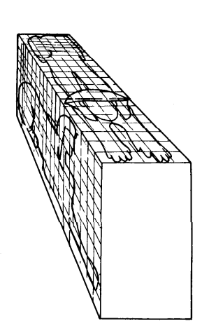

Sculptures
The structural elements of Egyptian art are the cube and horizontal and vertical axes. When preparing to carve a statue, Egyptian artists first drew horizontal and vertical guidelines on the surface so the proportions of the figures would be consistent with the established canon. The result of such measured proportions an art of remarkable order and uniformity that maintains the same balance whether in a figure in hieroglyphic text or a colossal statue. The guidelines also helped to arrange rows and groups of figures in a unified manner.When creating three-dimensional sculptures in stone, artists started with a block upon which they drew guidelines on all sides. They then carved until the figure emerged, renewing the guidelines from stage to stage.
Egyptian sculptors rarely completely freed figures from the stone block. With few exceptions, no space was carved out between the arms and torso or between the legs of standing figures. The bottom part of seated figures is adapted to a large degree to the rectangular shape of the blocklike seat. The backs of many standing figures remain connected to an upright slab or pillar, which Egyptologists call a “back pillar.” Such elements contribute to the centered figure of Egyptian stone statues and reinforce their frontality and axiality.
Figures carved in wood often were made from several pieces pegged together, since large logs had to be imported, so they were costly. Since wood is easier to carve than stone, much less brittle, and lighter, wooden figures were sculpted more completely in the round, with open spaces between the legs and between the arms and torso. However, wooden figures are represented in the same balanced and relatively motionless frontal poses as those in stone, giving an impression of stability appropriate for long lasting images.
